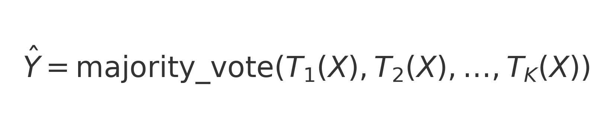

🗂️ Índice General
📘 Introducción
Use flecha ↓ para ver cada sección.
Contexto
Este sitio presenta el Sprint 1 de Modelamiento de Datos I (UMSA), usando el dataset Stack Overflow Annual Developer Survey 2025. Se aborda un problema de clasificación enfocada en la adopción de herramientas de IA por parte de desarrolladores.
Objetivo
Predecir si un encuestado usa IA (Sí/No) a partir de su perfil técnico y demográfico.
Tipo de modelo
Clasificación
Pregunta de investigación
¿Podemos predecir la adopción de IA en desarrolladores utilizando su perfil profesional y tecnológico en 2025?
Criterio de éxito
F1-score ≥ 0.80 en conjunto de prueba con validación cruzada estratificada (k=5).
🧩
- Sección 1 -
Definición del problema
Lineamientos de la Sección 1 del instructivo: problema de negocio, objetivo analítico y alcance.
Use flecha ↓ para ver cada sección.
Necesidad de negocio
Comprender qué factores explican la adopción de IA para orientar formación, herramientas y estrategias de talento en organizaciones tecnológicas.
Variable objetivo
AI_Usage (binaria: 1=usa IA, 0=no)
Predictoras usadas
| Tipo de variable | Columna | Justificación |
|---|---|---|
| Profesional | DevType | El rol del desarrollador influye en la adopción de IA |
| Experiencia | WorkExp | Años de experiencia laboral |
| Tecnológica | LanguageHaveWorkedWith | Lenguajes usados (Python, R, etc.) |
| Geográfica | Country | Contexto regional y acceso a IA |
| Laboral | RemoteWork | Modalidad de trabajo |
| Sectorial | Industry | Tipo de industria o empresa |
| Organizacional | OrgSize | Tamaño de la empresa |
| Educativa | EdLevel | Nivel de formación formal |
Restricciones
- No se incluyen datos históricos previos al 2025
- Dataset autodeclarado (posible sesgo de encuesta)
Hipótesis
La experiencia y ciertos lenguajes/roles están positivamente asociados a la adopción de IA.
📊
- Sección 2 -
EDA – 5 bivariados
Exploración de la relación entre AI_Usage y variables clave, como insumo para la selección de la técnica analítica.
- AI_Usage x WorkExp — boxplots
- AI_Usage × NumLanguages — histograma
- AI_Usage × Country — map
- AI_Usage × Industry — barras
- AI_Usage × EdLevel — barras
Use flecha ↓ para ver cada gráfico.
Matriz de Correlación Mixta

Las correlaciones con AI_Usage son bajas; destacan DevType (0.19), Country (0.17), Industry (0.12), OrgSize (0.09), EdLevel (0.06) y WorkExp (-0.09) como factores con influencia leve pero contextual.
Metadatos del EDA
AI_Usage x WorkExp
Las medianas son similares, con ligera menor experiencia en quienes usan IA; hay outliers con mucha experiencia usando IA.
AI_Usage × NumLanguages
Ambos grupos usan un número similar de lenguajes, aunque los usuarios de IA muestran una ligera mayor diversidad.
AI_Usage × Country
La adopción de IA se concentra en polos tecnológicos como EE.UU., India, Reino Unido y Alemania.
AI_Usage × Industry
Las industrias tecnológicas presentan mayor adopción de IA.
AI_Usage × EdLevel
La adopción de IA aumenta con la formación universitaria y de posgrado, aunque también crece entre técnicos.
🛠️
- Sección 2 -
Determinación de la técnica
Use flecha ↓ para ver cada sección.
2.1 Tipo de Problema
- Tipo de análisis: Clasificación supervisada
- Objetivo: Predecir si un desarrollador adopta IA
- Variable objetivo:
AI_Usage(0/1) - Naturaleza de los datos: Mezcla de variables categóricas
(DevType, Country, EdLevel…) y numéricas (WorkExp, NumLanguages) - Evaluación: Métricas de clasificación (Accuracy, Recall, F1)
2.3 Justificación del Modelo
Regresión Logística
- Modelo interpretable
- Forma un baseline sólido
- Rápido y estable
- Bueno para explicar factores de adopción
Random Forest
- Captura relaciones no lineales
- Robusto frente a ruido y outliers
- Mejor rendimiento en estructuras complejas
- Aporta una visión complementaria
Ambos modelos se probaron en versiones balanceadas para manejar el desbalance en AI_Usage.
2.4 Funciones Matemáticas
📌 Regresión Logística
Modelo probabilístico que estima la probabilidad de que un desarrollador use IA a partir de una combinación lineal de variables predictoras.

Interpretación:
- P(Y = 1 | X) → probabilidad estimada de uso de IA.
- β₀ → constante del modelo.
- βᵢ → influencia de cada predictor.
- σ(z) → función sigmoide para convertir a probabilidad.
🌲 Random Forest
Modelo no lineal basado en múltiples árboles de decisión. Cada árbol vota por una clase, y la predicción final se obtiene por votación mayoritaria.
Interpretación:
- Tₖ(X) → predicción del árbol k.
- K → número total de árboles.
- Ŷ → clase final decidida por mayoría.
- Robusto, captura relaciones no lineales y reduce sobreajuste.
⚔️
- Sección 3 -
Técnicas competidoras
📊 Resultados de Modelos Principales y Competidores
Los mejores resultados se obtienen con Random Forest (sin balance) y Logistic Regression (sin balance), ambos con F1-score ≈ 0.88.